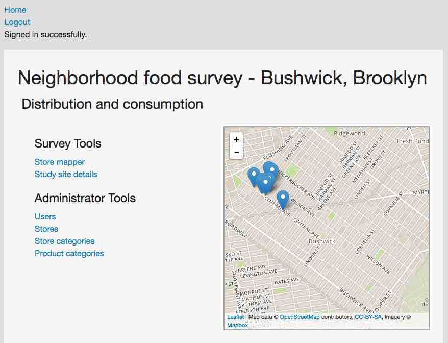

About Me
I am a freelance web developer based in Brooklyn, NY, with a particular passion for projects that benefit environmental and social causes. I have worked to develop research and data collection tools for NYC Audubon, Seatuck, Cornell Cooperative Extension, The New School, and the Delaware Riverkeeper Network.
Selected Projects
D-Bird

Concept, website development
PSFST

Concept, website development, design
GeoStudy
Concept, website development
LIVAS

Concept, website development, design
GeoJSON Doodler

Concept, website development, design
Contact
I am available for contract web development - please reach out to me at darren.a.klein@gmail.com